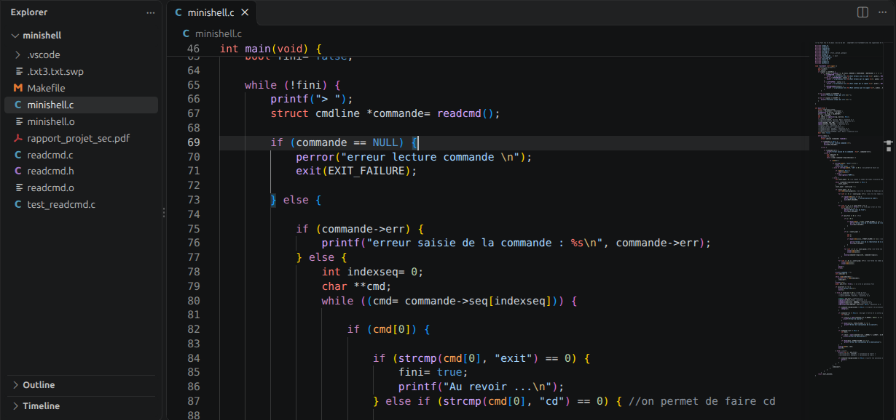

Projet individuel du cours de Systèmes d'exploitation (Sciences du Numérique), développé en C pendant les séances de TP.
Développer un interpréteur de commandes simplifié offrant les fonctionnalités de base des shells Unix comme bash.
readcmd.exit, qui termine la boucle, et cd sont gérées par le shell lui-même.Le projet se construit étape par étape au fil des séances de TP : gestion des processus, des signaux, redirections de fichiers, tubes et multiplexage avec select.